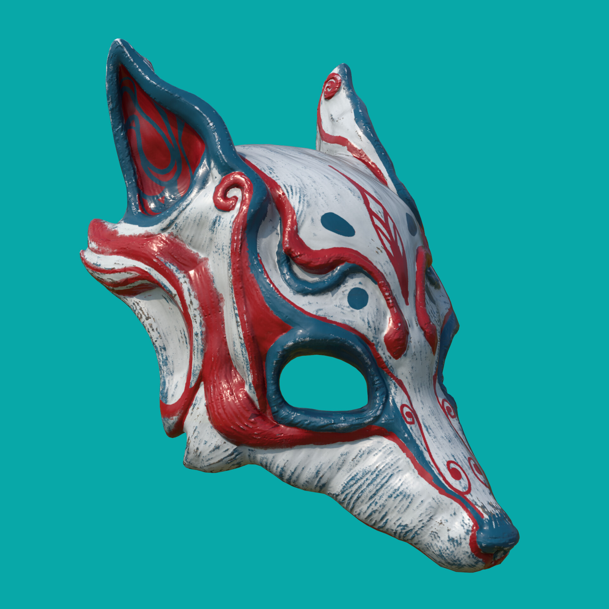
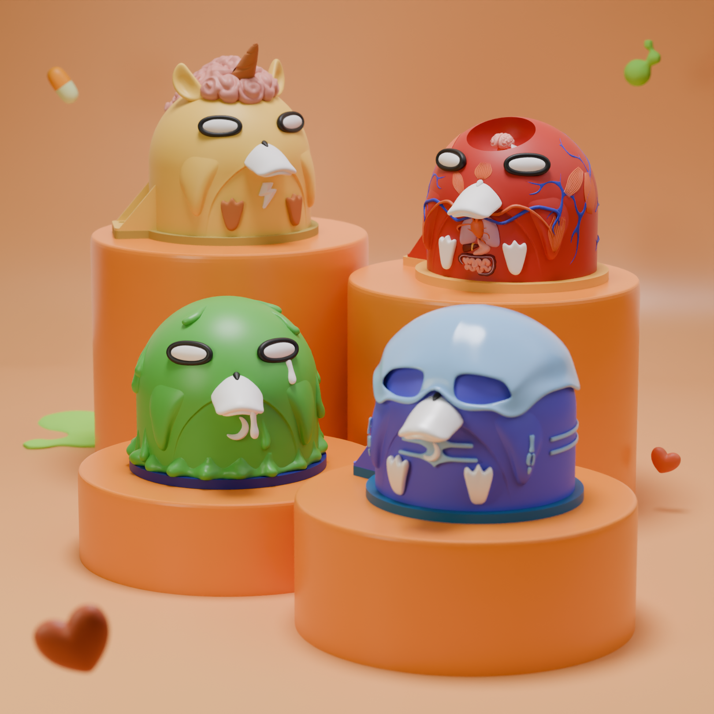
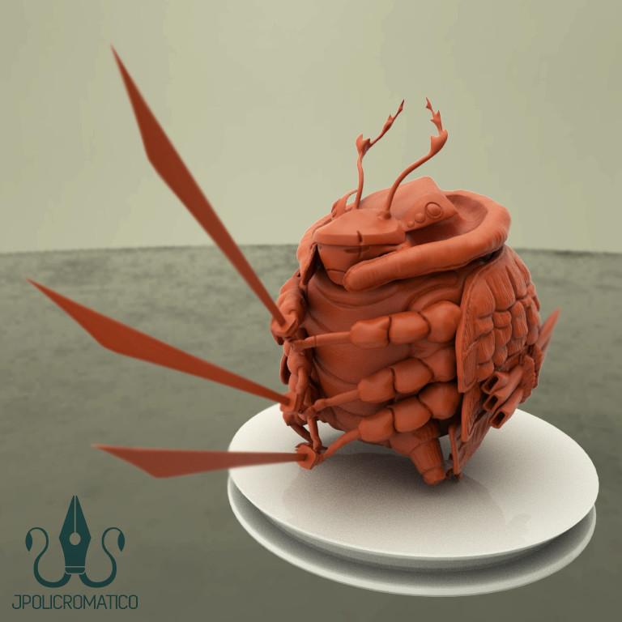
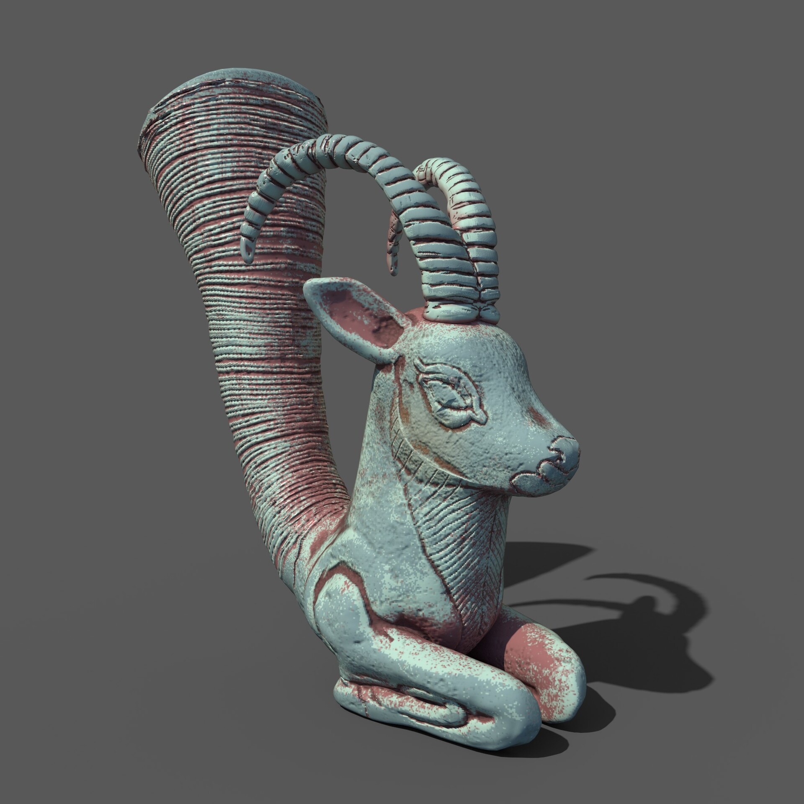
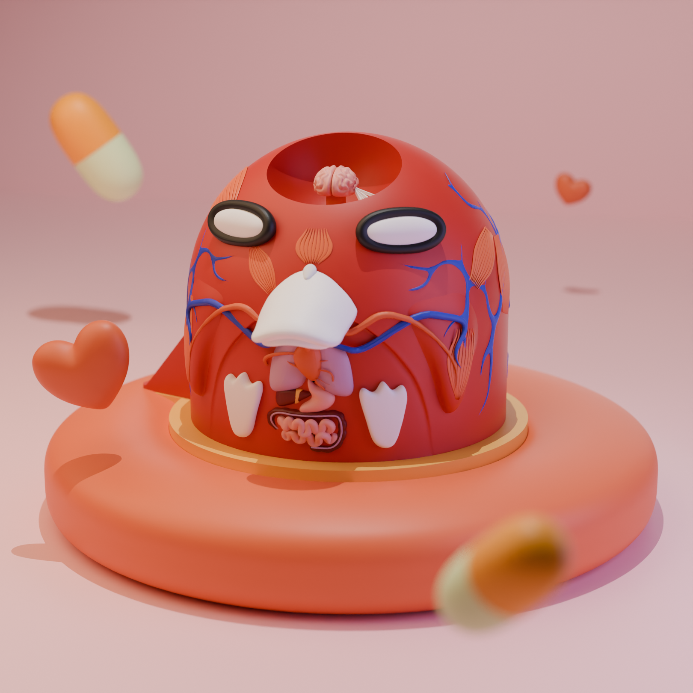

Highlights






Remote 3D Generalist located in Puebla, México. I transform complex concepts into immersive visual experiences and highly detailed renderings. My approach focuses on geometric precision, realistic lighting, and the creation of textures that tell a story, taking ideas from the initial sketch to a hyper-realistic digital reality.




